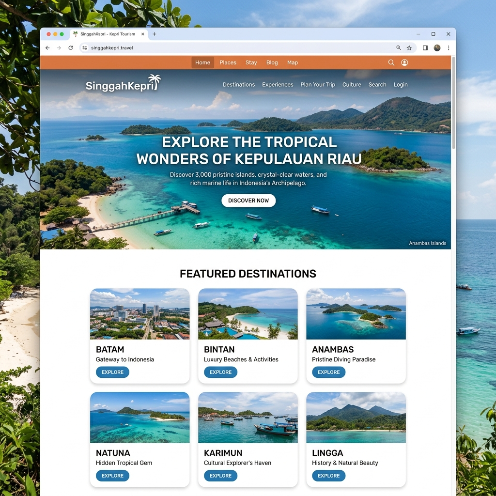
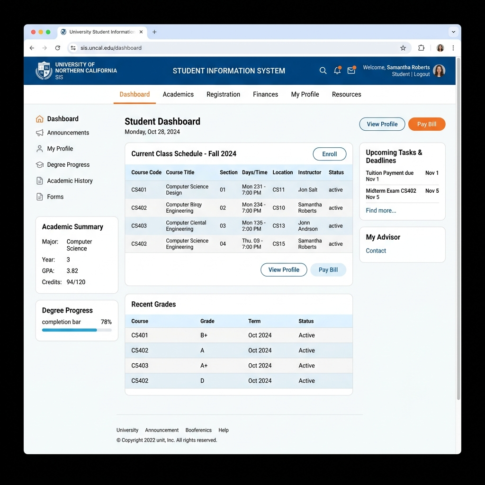
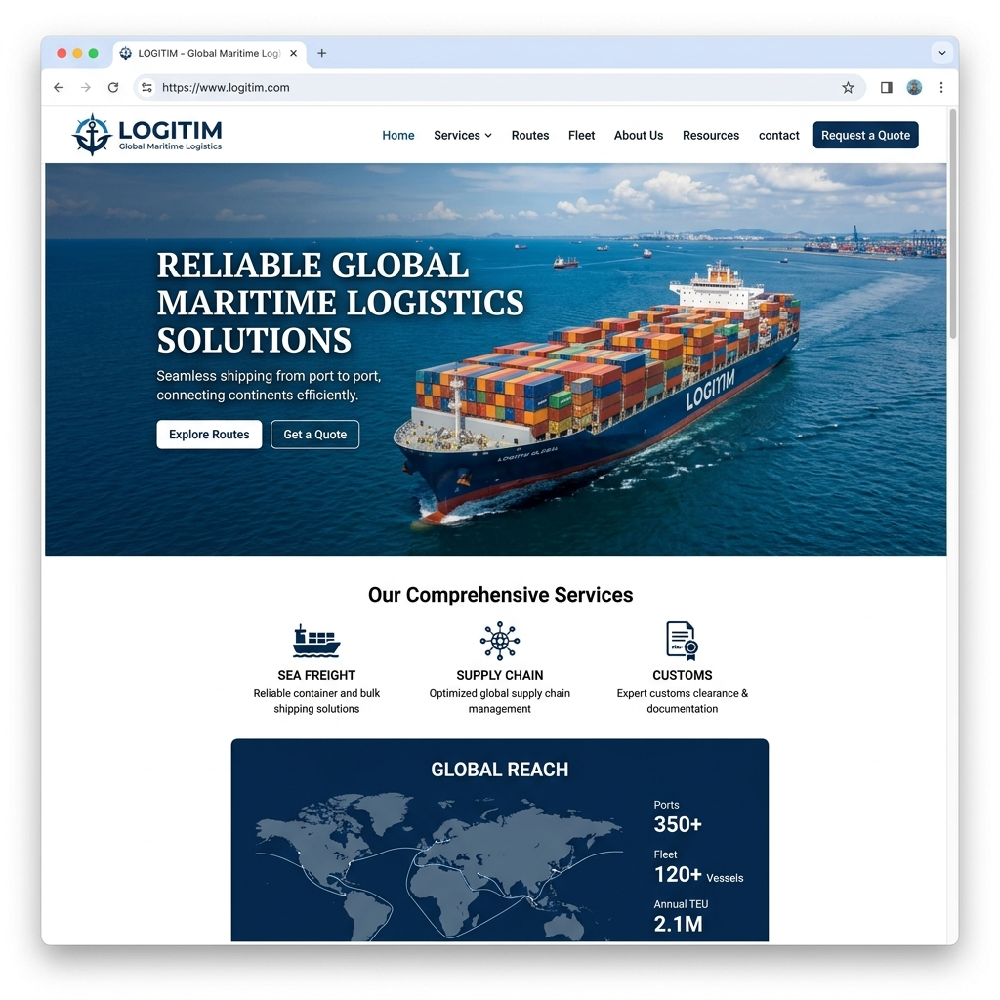

My Projects
Koleksi project dan eksplorasi teknis terbaru saya.

Public Service Information System
Portal web responsif yang terintegrasi dengan WebGIS untuk memetakan data institusi dan layanan publik secara spasial menggunakan metodologi Scrum.

UMRAH Student Portal
Sistem informasi akademik berbasis web untuk memfasilitasi kebutuhan pendataan mahasiswa Universitas Maritim Raja Ali Haji (UMRAH).

Logitim - Maritime Logistics
Perancangan antarmuka (user interface) dan prototipe interaktif untuk sistem logistik maritim, berfokus pada kelancaran user experience.
SinggahKepri Destination
Platform pariwisata yang dirancang untuk mempromosikan destinasi lokal di Provinsi Kepulauan Riau beserta fitur pendukungnya.
Interactive 3D Graphics
Eksplorasi rendering objek 3D interaktif di dalam browser menggunakan native web technologies (HTML, CSS, JS).
SantosoFishing Brand Identity
Perancangan identitas visual yang komprehensif, mencakup desain logo, panduan warna, tipografi, dan branding korporat.
Smart Courier Interface
Implementasi antarmuka pencarian rute kurir pintar memanfaatkan Algoritma A* (A-Star) untuk menghitung optimasi jarak.
Interactive Weather Station Dashboard
A dynamic and fully interactive weather reporting station dashboard supporting multi-city charts, dark theme modes, and live data telemetry integrations.
Let's Collaborate